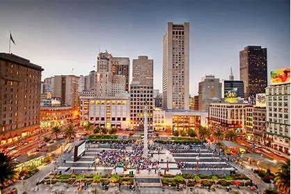
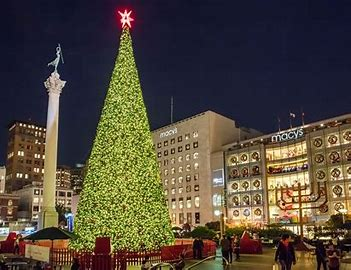
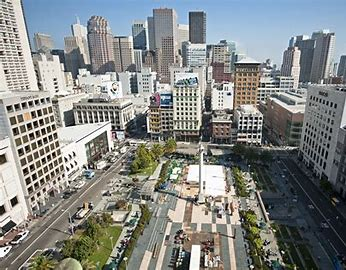
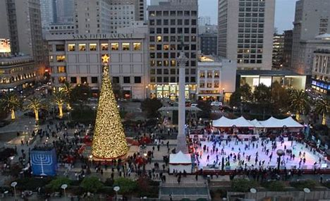
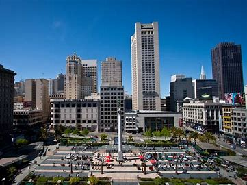

History
Union Square is a major tourist destination and one of the most famous neighborhoods in San Francisco. It was named to honor the rallies held there in support of the Union Army during the American Civil War. Today, it is known for its upscale shopping, theaters, hotels, and restaurants.
Union Square is surrounded by notable buildings and landmarks, including the Dewey Monument, the Grand Hyatt Hotel, and the Westin St. Francis. It serves as a gathering place for both locals and tourists, offering a vibrant and bustling atmosphere.
Visitor Information
- Location: Union Square, San Francisco, CA.
- Best Time to Visit: Anytime, but the area is especially vibrant during the holiday season.
- Admission: Free to visit and explore.
- Facilities: Public restrooms, seating areas, and nearby parking garages.
- Public Transportation: Easily reachable by bus, BART, and Muni.
Union Square photos




